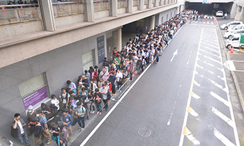
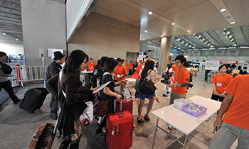
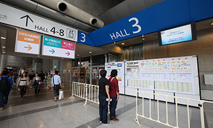
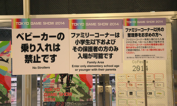

![Business Day 2015.9.17[Thu]-18[Fri] Public Day 2015.9.19[Sat]-20[Sun] @ Makuhari Messe](../../../en/common/images/sp_date_en.png)
![TOKYO GAME SHOW 2015
Business Day 2015.9.17[Thu]-18[Fri] Public Day 2015.9.19[Sat]-20[Sun] @ Makuhari Messe](../../../en/common/images/maintitle_en.png)

We recommend that you get an idea of the look and feel of Tokyo Game Show 2015 (TGS2015) in advance. Photos from TGS2014 are included to help you form a mental picture. Please note, however, that there will be some differences between TGS2015 and TGS2014, so the photos are for reference purposes only.
All halls at Makuhari Messe (International Exhibition Halls 1-8 on the south side, and International Exhibition Halls 9-11 on the north side) will be used for Tokyo Game Show 2015 (TGS2015).
There will be two admission gates for first-time entry to TGS2015 by the general public. One will be located by Halls 1-8 (West Square), and the other will be by Halls 9-11 (at the first floor of Hall 11).
When entering from the admission gate by Halls 1-8, visitors will first undergo a baggage check at Makuhari Messe West Square, and then proceed to the venue. Please follow the directions of attendants if a line has formed for entry, and go to the very end of the line.
This year, when the doors first open each day, entry will be from the first floor entrance of Hall 8. The entrance will switch to the first floor entrance of Hall 1 after some extent of visitors has entered the venue.


As for entry at Halls 9-11, visitors will first undergo a baggage check at the area outside the first floor of Hall 11, and then proceed to enter from the first floor entrance of Hall 11. Please follow the directions of attendants if a line has formed for entry, and go to the very end of the line.


We recommend that you decide beforehand which admission gate you will use to enter TGS2015 from (i.e. from either Halls 1-8 or Halls 9-11) after checking which sections or areas you would like to visit first. Please be aware, however, that if the admission gate to Halls 1-8 becomes too congested, you may only be able to enter from the admission gate by Halls 9-11.
If you plan to use the admission gate by Halls 9-11, please note the following.

For a limited time after the doors open, holders of TGS2015 Supporters Club tickets will be allowed to enter the venue from a priority line at the admission gates by Halls 1-8 and Halls 9-11. (It is a separate line from the queue for general visitors.)
Note, however, that if you enter from the admission gate by Halls 9-11, you will not be able to receive the special goods for Supporters Club ticket holders (T-shirt and pin badge) on the spot. If you would like to claim your special goods, please go after 11:30 a.m. to the information booth in front of Hall 5 (photo on right), which is on the second floor concourse of Halls 1-8.

If entering from the admission gate by Halls 1-8, please proceed to the exclusive reception after you have undergone the baggage check. After checking your ticket, you will be handed the special goods (T-shirt and pin badge). Please then proceed to the priority lane for entrance.


Please be aware that the exclusive receptions for Supporters Club ticket holders and priority lanes will be closed at a time decided by Management office. If you arrive after the reception closes, you will need to enter from the same line as general visitors. Even if you enter from the admission gate by Halls 1-8, if you arrive after the exclusive reception has closed, you will have to go to the information booth in front of Hall 5 on the second floor concourse of Halls 1-8 to claim your special goods. Please note that they can only be claimed on the day of entry (i.e. the day for which your ticket is valid).
The admission gates are schedules to open at 10 a.m. However, there are cases in which we may push forward the admission time for holders of certain tickets, such as the Supporters Club ticket.
Please be forewarned that queuing all night for Tokyo Game Show entry is strictly prohibited. Individuals who break this rule will not be permitted entry to TGS2015.
When you enter the venue, all visitors will have their baggage checked for ensuring safety. Bringing in prohibited items into the venue will be strictly forbidden.

Try to keep your baggage as small as possible so that baggage check can be carried out easily.
It may take longer for people with a large baggage (for example, those taking part in cosplay) to enter the site. Please come to the site allowing enough time for baggage check. The contents of the plastic bottle may be checked.
To alleviate congestion and for reasons of promoting safety at TGS2015, some of the exhibitors are scheduled to hand out priority tickets for experiencing popular game titles or for admission to the event stage area. (There will only be a limited number of priority tickets handed out, the numbers of which will differ according to the exhibitor.)
The priority tickets will be handed out on a first-come first-served basis and can only be received by those entering from the general admission gate by Halls 1-8.
TGS2015 plans to hand out the priority tickets at Hall 8, however there is a possibility that the distribution method will by changed from past years. The game titles and events for which priority tickets will be distributed are scheduled to be announced shortly before TGS2015 is held. Please check the “Distribution of Priority Tickets” page on the official TGS2015 website.
Please note that various types of exclusive entrance will be set on the second floor, such as for the disabled person, TGS official tours.



People who enter through these exclusive entrances will not be entitled to receive any priority ticket for game trial play. If you wish them, please use general admission gate.

2002-2015 CESA / Nikkei Business Publications, Inc. All rights reserved.